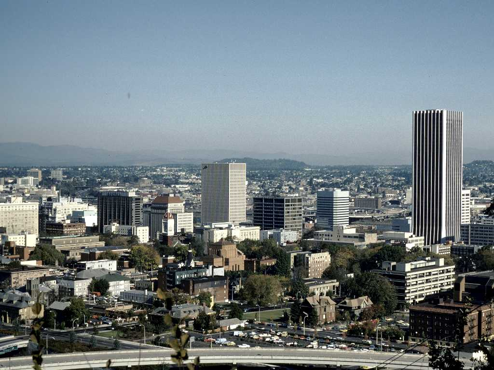
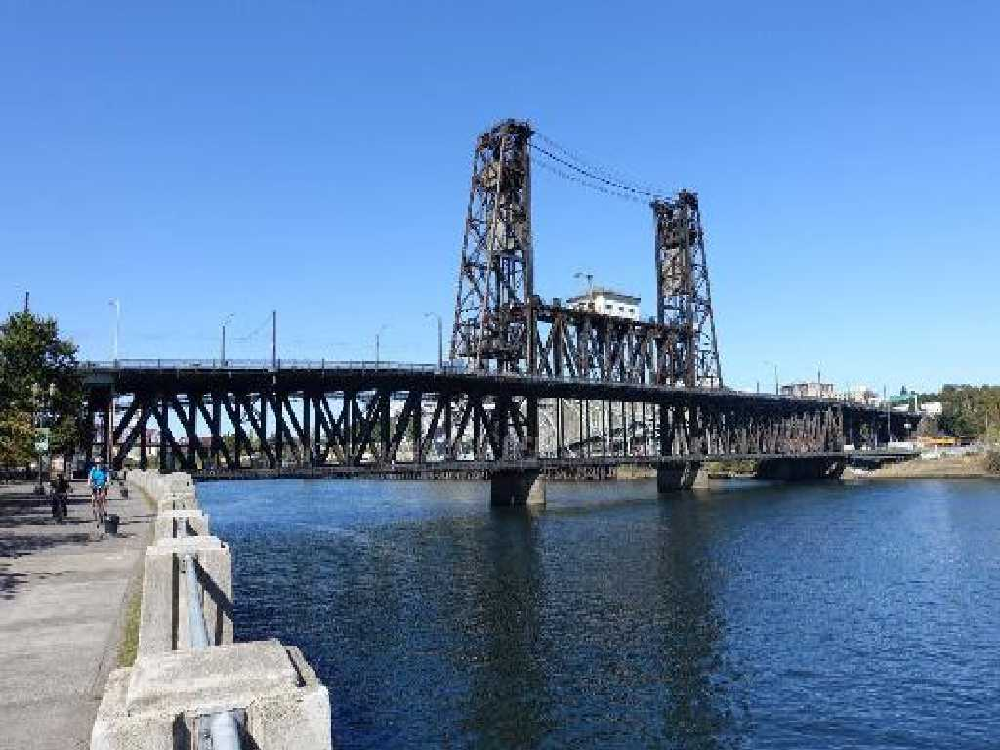
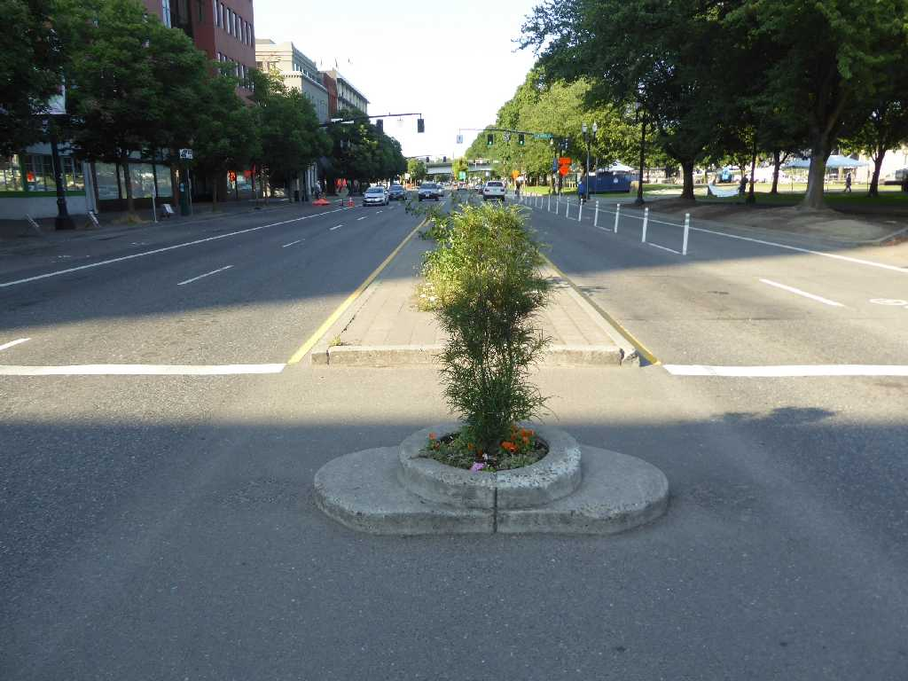
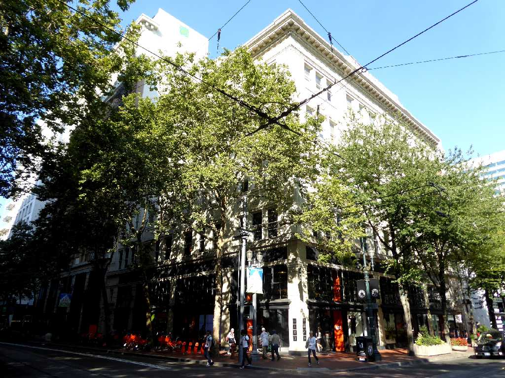
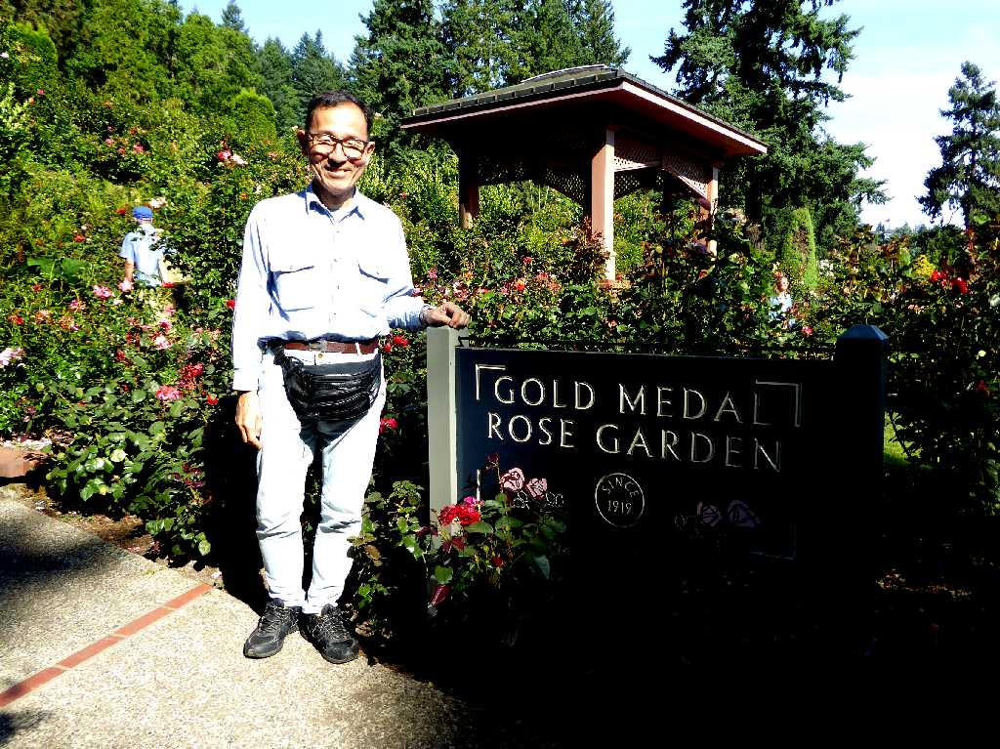

July 1970 Portland
農業の盛んなウェストヒルズ峡谷とコロンビア川の海運により太平洋岸北西部最大の港湾都市となりオレゴン州の州都となった

Steel Bridge Portland
約５０年ぶりの再訪問で懐かしのチャイナタウンは寂れていた

Mill Ends Park
世界最小の公園としてギネスブックに掲載されている

NIKI 1st Shop
ポートランド中心街にあるナイキ１号店

August 19 2017 International Rose Test Garden Portland
国際バラ試験農園